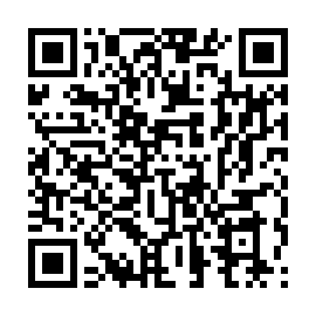

Interaktiver Simulator zur spektralen Durchflusszytometrie

Gerätekamera auf den QR-Code richten
henry-nording.github.io/rent-a-scientist-fluorescence/de
Keine App und kein Login erforderlich; öffnet in einem Webbrowser.
Copyright 2026 Henry Nording. Alle Rechte vorbehalten.